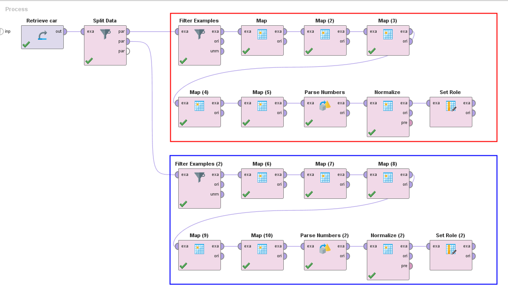
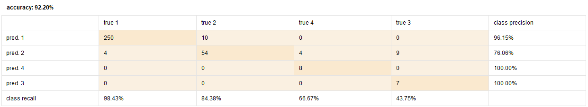

Implementasi k-Nearest Neighbors
Note
Untuk session ini, kita akan menggunakan dataset berikut: :download:`Car Evaluation </assets/session-09/car.csv>`_
Source: https://archive.ics.uci.edu/dataset/19/car+evaluation
Split data menjadi dua bagian: training dan testing. Gunakan operator Split Data. Gunakan 80% sebagai rasio training dan 20% sebagai rasio testing.
Lakukan preprocessing data terhadap dataset training dan testing. Ikuti langkah-langkah berikut:
Filter Examples untuk menghapus data kosong
Map (untuk mengubah attribut polynomial)
Untuk attribute buying, maint, dan safety; ubah map menjadi sebagai berikut:
low = 1
med = 2
high = 3
vhigh = 4
Untuk attribute doors, ubah “5more” menjadi 5
Untuk attribute person, ubah “more” menjadi 6
Untuk attribute lug_boot, ubah map menjadi sebagai berikut:
small = 1
med = 2
big = 3
Untuk attribute class, ubah map menjadi sebagai berikut:
unacc = 1
acc = 2
good = 3
vgood = 4

Parse Numbers (untuk kolom polynomial menjadi numeric)
Normalize (untuk semua kolom, kecuali class)
Set Role (attribute class sebagai “label”)
{kind=link}
Buat model k-NN dengan menggunakan operator Naive Bayes. Gunakan dataset training sebagai inputnya. Serta ubah nilai k menjadi 4 (karena ada 4 class).
Hubungkan k-NN yang sudah digunakan dengan node Apply Model. Tujuannya supaya kita dapat mengevaluasi model yang sudah kita buat.
Untuk mengevaluasi model yang sudah kita buat, gunakan operator Performance (Classification). Hubungkan node Apply Model dengan node Performance.
Jika sudah selesai, tekan tombol Run untuk melihat hasilnya.
{kind=link}
Analisa Result
Note
Hasil dari matriks ini mungkin akan berbeda dengan hasil yang akan kalian dapatkan.
Setelah proses selesai, kita dapat melihat confusion matrix kita. Pada gambar di bawah ini, kita dapat lihat bahwa accuracy kita adalah 92% yang berarti model kita sudah cukup baik dalam melakukan prediksi.
{kind=link}